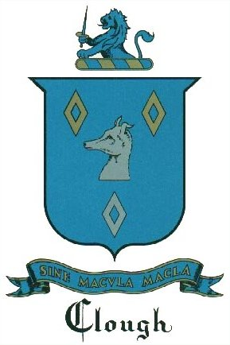
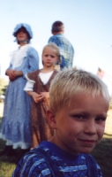
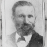
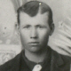
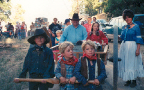
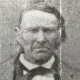

|
Clough Coat-Of-Arms |
|
 The ancient emblem or mark of Cloughs was a mascle, and their cry was "Sine Macula Macla." John Burke quotes as his authority for the above assertion from the ancient article on the Science of Heraldry by Colomtriere which states, "I am of the opinion that the Lords of Rohan, who I believe are the first who bore these figures on their arms, assumed them because in most ancient viscounty of Rohan there are an abundance of small flints which being cut in two, this figure appears on the inside of them: the carp too which are found in fish ponds, exhibit a similar mark on their scales peculiar to this country or duchy of Rohan and Extraordinary. These circumstances so very peculiar to the country and at the same time extraordinary, the ancient lords adopted the figures for their arms and transmitted them to their posterity, giving them the name of mascles from the Latin word macula whence some of the houses have taken for their motto, 'Sine macula macla -- a mascle without a spot'. " From the above quotation, this figure and motto belong to the Clough Family as a whole and are valid emblems for any member to assume. From the above quotation, this figure and motto belong to the family as a whole and are valid emblems for any member to assume. In shape the mascle is a rhombus of diamond which in England is called a lozenge. The steel plates of mediaeval armor were lozenge shaped; the panes of many old casement windows were lozenges. In English Heraldry, the lozenge or mascle was a bearing in the form of a lozenge perforated or voided so that the field appeared through the opening. This bearing was never changed with any other. To understand the significance of the "Mascle without a spot," some explanation about the customary use of this figure is necessary. Among early merchants the mascle, meaning a spot, was adopted as a sort of trade mark to indicate an imperfection, such as a blemish in fabric or a flaw in a jewel. When ancient symbolism developed into Heraldry, first on the Continent of Europe, later into English Heraldry, as a science, the old war cries became mottos of the Houses. "Sine macla" explained that the mascle that was charged upon the escutcheon did not suggest dishonor, rather that the family was without disgrace and no sinister stain was imputed by this ancient figure. The coat-of-arms that is included in this book cannot be claimed as the insignia of the John Clough Branch of the family. From present knowledge, this is the earliest device that was assumed by a Clough. Either late in the twelfth or early in the thirteenth century Heraldry was introduced into England and Wales. After 1300 Hugh Clough of Wales was granted this insignia which descended to Sir Richard Clough at Llewene Green in Denbigh in Northern Wales before the fifteenth century. No claim to a coat-of-arms is valid unless authorized by the Officers of Arms either in London, Edinboro, or Dublin, and the right to the armorial bearings has been registered in the Bureau of Heraldry in one of these cities. To display arms without proof of ownership is a form of forgery, since in the days of chivalry the coat-of-arms was the device by which a knight in armor was recognized and the crest was equivalent to his legal signature. (This information is taken from "The Story of the Family of JOHN CLOUGH of Salisbury, Massachusetts" Published by: The John Clough Genealogical Society; pages 14, 15 &16. All rights reserved.) |
|
A Brief History By Dennis Cluff John Clough (born in 1613) came to America from London in 1635 on the ship Elizabeth with his wife Jane, but after hundreds of dollars spent on research in England we have never been able to positively connect him to his father or family or birthplace. He must have been a scoundrel, an indentured apprentice, a religious refugee or ... In any case we have been unable to attach him to his roots in England. We do think that the original Clough's came from Saxony with William the Conqueror in the eleventh century. They settled in Yorkshire. By Dennis Cluff  I have told you all the story of how as a primary child in the centennial year of the church, July 1947, we were living in Mesa (actually Lehi) which was over 50% members of the church. That 24th of July was a memorable event that I have never forgotten. Also something I have never forgotten was the intense effort put into preparation for that celebration. Our primary chorister was Sis. Hunt, a very thin (skinny) woman with a husband that looked like me and she was absolutely determined to teach us all the song "Come, Come Ye Saints" for this event. The irony of this story is that at that time in my life NO ONE had ever taken the time to tell me about anything of our family pioneer heritage. To me the Cluff name was obscure in the church. I thought that we, and my grandparents, were the only ones. As a result I had no connection to pioneers personally whatsoever. So the song Come, Come Ye Saints became, to say the least, annoying to me. So as Sister Hunt made us sing the song over and over to the music from that old pump organ, I couldn't take it any more. I poked my fingers in my ears as I slumped down in the pew so that she couldn't see me and hummed another tune so I couldn't hear it. Again, the irony of it all was that NO family in the whole church has more pioneer ancestors that have crossed the plains in covered wagons or handcarts than ours does. Even now I keep learning of even more of our ancestors that "were there". When I was released from the Stake Presidency in the summer of 2000, the General Authority who released us all told Diana and me that today the Cluff name and family is the largest extended family in the whole church. Tomorrow is 24th of July. The church is commemorating the 150th anniversary of the Handcart Pioneer saga. The most poignant part is that my Great Grandfather Moses Cluff had just completed his mission in England and was on his way home with his mission President, Franklin D. Richards who also had just been released and they had joined up with the Martin Handcart Company. A couple of young convert ladies that Moses had worked with in England were in that company also. He later married one and then the other too! Moses was assigned to take care of the company "herd", the cattle used for food on the way. When they later became trapped in the big blizzard of 1856 in Wyoming, It was one of his brothers who responded to the call of Pres. Brigham Young to rescue those in the snow on the plains. His father, David Cluff, was the convert who joined the church in 1830 and had 12 sons and 1 daughter. Moses was one of those sons. David and his family left Nauvoo and, in a schooner they built themselves, sailed across the plains to Utah in comfort. Remember that David came from New Hampshire and was a carpenter and shipbuilder by trade.  Robert T. Cluff, my Grandfather, (who I knew and loved dearly) was the 26th of 27 children of Moses Cluff from four wives. Grandpa Cluff married Maybelle Johnson, whose family who were pioneers in wagons. So both sides of my Cluff/Johnson ancestry were true pioneers. George Washington Sevey was a pioneer with a great story and he married three pioneer women. My Grandmother Sevey (Heder) came from pioneer folk that emigrated from Denmark, so all four of my grandparents were of pioneer heritage. Now look at the pioneer woman I married. She would have been a really rugged pioneer mother. Her George, Tietjen, Hassell and Lamb ancestors were all pioneers. She can tell you incredible stories of the Tietjen and Lamb pioneers. Anyway, I just hope that none of our children go through life without an appreciation for the pioneer parents that went through so much hardship and suffering � for the same testimonies that we have of the reality of a living Heavenly Father and loving, living Savior Jesus Christ and their prophet of the last days, Joseph Smith. Think for a minute of the LIVES of difficulty, just because they had a firm testimony of the Gospel of Jesus Christ �while we get upset when we can't find the remote control for the TV set!  One thought I often reflect on; David Cluff, in his lifetime built homes for his family in New Hampshire, Eastern Canada, near Kirtland, Nauvoo, Winter Quarters, Provo, Show Low and Pima. Time after time he would pull up his wagon and gather his sons, pull out the axes and adz' and start all over again building another "home". We have it really EASY because of the sacrifices they went through...for us. Let us not forget! David Cluff John William Coward James Havens & Anna Eliza Imlay George Washington Sevey Jr Margaret Nebraska Imlay George Francis Sevey Anna Christina Heder |